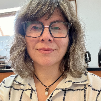

Denisse Castro



Investigadora por Mexico at National Cancer Institute
I am an immunologist studying the effect of nutrition in ameliorating cervical cancer and local inflammation. I am a member of the National Research System, the Mexican Society for Immunology, and the American Dietetic Association.
I received my bachelor’s degree in Nutrition from Universidad Ibero. Also, I earned a Ph.D. in Immunology at the Biological Sciences National School, advised by Vianney Ortiz-Navarrete.
Research Projects

Publications
Luvian-Morales, J., A. Rueda-Escalona, M. Delgadillo-González, et al. (2026). “Benefits of an anti-inflammatory diet compared to a low-residue diet during concurrent chemoradiation therapy for patients with locally advanced cervical cancer: A randomized clinical trial”. In: Front Nutr. AOP, pp. 1-32. DOI: 10.3389/fnut.2026.1835417.
Luvián-Morales, J., L. Galvan-Cota, L. Galvan-Cota, et al. (2026). “Comparison of Two Instruments to Assess the Impact of Cachexia on Quality of Life in Women with Cervical Cancer”. In: Nutr Cancer. AOP, pp. 1-13. DOI: 10.1080/01635581.2026.2658765.
Prieto-Islas, M., E. Godoy-Dahbura, D. Villalpando-Sánchez, et al. (2025). “HPV vaccination improves immune response in children with respiratory papillomatosis”. In: Sci Rep 15.1, p. 29885. DOI: 10.1038/s41598-025-14787-2.
Cruz-Cureño, G., M. Rosales-Tarteaut, L. Arriaga-Pizano, et al. (2024). “Splenocytes and thymocytes migration patterns between lymphoid organs in pregnancy”. In: Biochem Biophys Rep 39, p. 101769. DOI: 10.1016/j.bbrep.2024.101769.
Gutiérrez Salmeán, G., M. Delgadillo González, A. Rueda Escalona, et al. (2024). “Effects of prebiotics, probiotics, and synbiotics on the prevention and treatment of cervical cancer: Mexican consensus and recommendations”. In: Front Oncol 14, p. 1383258. DOI: 10.3389/fonc.2024.1383258.
Cérbulo-Vázquez, A., L. Cabrera-Rivera, I. Mancilla-Herrera, et al. (2024). “Metabolic Recovery with the Persistence of Proinflammatory Leucocyte Dysfunction After Bariatric Intervention for Obesity”. In: Obes Surg 34.5, pp. 1575-1583. DOI: 10.1007/s11695-024-07135-2.
Cetina-Pérez, L., J. Luvián-Morales, M. Delgadillo-González, et al. (2024). “Sociodemographic characteristics and their association with survival in women with cervical cancer”. In: BMC Cancer 24.1, p. 161. DOI: 10.1186/s12885-024-11909-3.
Luvián-Morales, J., M. Delgadillo-González, D. Castro-Eguiluz, et al. (2024). “Quality of life but not cachexia definitions are associated with overall survival in women with cervical cancer: a STROBE-compliant cohort study”. In: Jpn J Clin Oncol 54.4, pp. 416-423. DOI: 10.1093/jjco/hyad182.
Alarcón-Barrios, S., J. Luvián-Morales, D. Castro-Eguiluz, et al. (2024). “Chemoradiotherapy treatment with gemcitabine improves renal function in locally advanced cervical cancer patients with renal dysfunction”. In: Curr Probl Cancer 48, p. 101041. DOI: 10.1016/j.currproblcancer.2023.101041.
Luvián-Morales, J., J. Castillo-Aguilar, M. Delgadillo-González, et al. (2023). “Validation of the QLQ-CAX24 instrument in cervical cancer and its association with cachexia classifications”. In: Jpn J Clin Oncol 53.4, pp. 304-312. DOI: 10.1093/jjco/hyac199.
Arango-Bravo, E., L. Cetina-Pérez, T. Galicia-Carmona, et al. (2022). “The health system and access to treatment in patients with cervical cancer in Mexico”. In: Front Oncol 12, p. 1028291. DOI: 10.3389/fonc.2022.1028291.
Gallardo-Rincón, D., E. Montes-Servín, G. Alamilla-García, et al. (2022). “Clinical Benefits of Olaparib in Mexican Ovarian Cancer Patients With Founder Mutation -Del ex9-12”. In: Front Genet 13, p. 863956. DOI: 10.3389/fgene.2022.863956.
Pérez-Martín, A., D. Castro-Eguiluz, L. Cetina-Pérez, et al. (2022). “Impact of metabolic syndrome on the risk of endometrial cancer and the role of lifestyle in prevention”. In: Bosn J Basic Med Sci 22.4, pp. 499-510. DOI: 10.17305/bjbms.2021.6963.
Brau-Figueroa, H., E. Arango-Bravo, D. Castro-Eguiluz, et al. (2022). “Effectiveness of Concomitant Chemoradiotherapy with Gemcitabine in Locally Advanced Cervical Cancer Patients with Comorbidities”. In: Cancer Res Treat 54.2, pp. 554-562. DOI: 10.4143/crt.2021.375.
Luvián-Morales, J., F. Varela-Castillo, L. Flores-Cisneros, et al. (2022). “Functional foods modulating inflammation and metabolism in chronic diseases: a systematic review”. In: Crit Rev Food Sci Nutr 62.16, pp. 4371-4392. DOI: 10.1080/10408398.2021.1875189.
Arango Bravo, E., T. Carmona, D. Castro-Eguiluz, et al. (2021). “Treatment of Locally Advanced Cervical Cancer With Kidney Failure and Comorbidities”. In: Oncology 35.11, pp. 741-745. DOI: 10.46883/ONC.2021.3511.0741.
Luvián-Morales, J., L. Flores-Cisneros, R. Jiménez-Lima, et al. (2021). “Validation of the QLQ-CX24 questionnaire for the assessment of quality of life in Mexican women with cervical cancer”. In: Int J Gynecol Cancer 31.9, pp. 1228-1235. DOI: 10.1136/ijgc-2021-002720.
Galicia-Carmona, T., E. Arango-Bravo, J. Serrano-Olvera, et al. (2021). “ADXS11-001 LM-LLO as specific immunotherapy in cervical cancer”. In: Hum Vaccin Immunother 17.8, pp. 2617-2625. DOI: 10.1080/21645515.2021.1893036.
Castro-Eguiluz, D., S. Barquet-Muñoz, A. Arteaga-Gómez, et al. (2020). “Therapeutic Use Of Human Papillomavirus Vaccines In Cervical Lesions”. In: Rev Invest Clin 72.4, pp. 239-249. DOI: 10.24875/RIC.20000059.
Medina-Contreras, O., J. Luvián-Morales, F. Valdez-Palomares, et al. (2020). “IMMUNONUTRITION IN CERVICAL CANCER: IMMUNE RESPONSE MODULATION BY DIET”. In: Rev Invest Clin 72.4, pp. 219-230. DOI: 10.24875/RIC.20000062.
Cetina-Pérez, L. and D. Castro-Eguiluz (2020). “Consensus Report On The Prevention, Diagnosis, And Treatment Of Cervical Cancer - A Perspective From The Immune System Toward Immunotherapy”. In: Rev Invest Clin 72.4, pp. 185-187. DOI: 10.24875/RIC.20000129.
Cérbulo-Vázquez, A., L. Arriaga-Pizano, G. Cruz-Cureño, et al. (2019). “Medical Outcomes in Women Who Became Pregnant after Vaccination with a Virus-Like Particle Experimental Vaccine against Influenza A (H1N1) 2009 Virus Tested during 2009 Pandemic Outbreak”. In: Viruses 11.9, p. 868. DOI: 10.3390/v11090868.
Sánchez, M., D. Castro-Eguiluz, J. Luvián-Morales, et al. (2019). “Deterioration of nutritional status of patients with locally advanced cervical cancer during treatment with concomitant chemoradiotherapy”. In: J Hum Nutr Diet 32.4, pp. 480-491. DOI: 10.1111/jhn.12649.
Serralde-Zúñiga, A., D. Castro-Eguiluz, J. Aguilar-Ponce, et al. (2018). “Epidemiological Data on the Nutritional Status of Cancer Patients Receiving Treatment with Concomitant Chemoradiotherapy, Radiotherapy or Sequential Chemoradiotherapy to the Abdominopelvic Area”. In: Rev Invest Clin 70.3, pp. 117-120. DOI: 10.24875/RIC.18002523.
Flores-Cisneros, L., D. Castro-Eguiluz, D. Reyes-Barretero, et al. (2018). “Effects of Dietary Components During and After Concomitant Chemoradiotherapy, Radiotherapy, or Sequential Chemoradiotherapy to the Abdominopelvic Area”. In: Rev Invest Clin 70.3, pp. 126-129. DOI: 10.24875/RIC.18002525.
Castro-Eguiluz, D., J. Leyva-Islas, J. Luvian-Morales, et al. (2018). “Nutrient Recommendations for Cancer Patients Treated with Pelvic Radiotherapy, with or without Comorbidities”. In: Rev Invest Clin 70.3, pp. 130-135. DOI: 10.24875/RIC.18002526.
Castillo-Martínez, L., D. Castro-Eguiluz, E. Copca-Mendoza, et al. (2018). “Nutritional Assessment Tools for the Identification of Malnutrition and Nutritional Risk Associated with Cancer Treatment”. In: Rev Invest Clin 70.3, pp. 121-125. DOI: 10.24875/RIC.18002524.
Cetina-Pérez, L., A. Serrano-Olvera, L. Flores-Cisneros, et al. (2018). “Epidemiological Profile, Gastrointestinal Toxicity, and Treatment of Pelvic Cancers in Patients Managed with Radiotherapy to the Abdominal Pelvic Area”. In: Rev Invest Clin 70.3, pp. 112-116. DOI: 10.24875/RIC.18002528.
Cetina-Pérez, L., D. Castro-Eguiluz, and L. Oñate-Ocaña (2018). “Nutrition in Patients with Cancer Treated with Chemo-radiotherapy to the Abdominopelvic Area. A consensus report”. In: Rev Invest Clin 70.3, pp. 109-111. DOI: 10.24875/RIC.18002521.
Serna-Thomé, G., D. Castro-Eguiluz, V. Fuchs-Tarlovsky, et al. (2018). “Use of Functional Foods and Oral Supplements as Adjuvants in Cancer Treatment”. In: Rev Invest Clin 70.3, pp. 136-146. DOI: 10.24875/RIC.18002527.
Rosales-Reyes, R., A. Pérez-López, C. Sánchez-Gómez, et al. (2012). “Salmonella infects B cells by macropinocytosis and formation of spacious phagosomes but does not induce pyroptosis in favor of its survival”. In: Microb Pathog 52.6, pp. 367-374. DOI: 10.1016/j.micpath.2012.03.007.
Castro-Eguiluz, D., R. Pelayo, V. Rosales-Garcia, et al. (2009). “B cell precursors are targets for Salmonella infection”. In: Microb Pathog 47.1, pp. 52-56. DOI: 10.1016/j.micpath.2009.04.005.
Rosales-Reyes, R., C. Alpuche-Aranda, M. L. Ramírez-Aguilar, et al. (2005). “Survival of Salmonella enterica serovar Typhimurium within late endosomal-lysosomal compartments of B lymphocytes is associated with the inability to use the vacuolar alternative major histocompatibility complex class I antigen-processing pathway”. In: Infect Immun 73.7, pp. 3937-3944. DOI: 10.1128/IAI.73.7.3937-3944.2005.
Hernández Guerrero, C., R. Tlapanco Barba, C. Ramos Pérez, et al. (2003). “Endometriosis and discouragement of immunology cytotoxic characteristics”. In: Ginecol Obstet Mex 71, pp. 559-574.